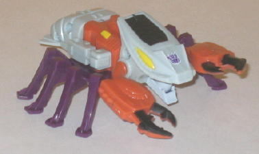 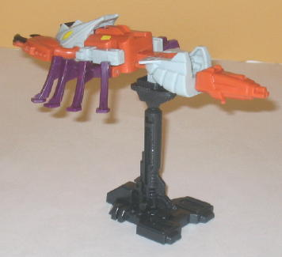 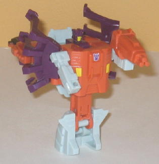
Difficulty of Transformation : Very Easy
Color Scheme : Pale off-white, dark violet, dull orange, and some yellow and black
Rating : 6.0
Allegiances
: Decepticon
Set Price
(in addition to membership):
$119 (U.S.)
Before I get started,
there's a few important notes I need to make about this set-- first, although
it's a reissue of a G1 combiner in new colors, all of these molds are old,
and completely unchanged from the originals, but they're getting full reviews
here anyways because I have not reviewed these molds before (and indeed,
have not had all of them before now). Secondly, the Seacons have your usual
"Scramble City" combiner configuration-- in which one larger robot forms
the main body while the other four can form any of the limbs-- with a bit
of a twist. Since there's six Seacons, not five, one forms a Targetmaster
weapon for the gestalt to hold in combined mode, and each of the smaller
Seacons can not only form an arm and a leg, but a weapon mode as well.
(Stands also come along with the set to display them in their Targetmaster
forms individually, if you so desire.) And, last but not least, be aware
that there have been several reports of QA issues with this set, likely
due to mold degradation-- very loose joints/legs, that sort of thing. It's
not universal, as my set is fine, it's just something to keep in mind when
considering this expensive of a set.
 Nautilator
Nautilator
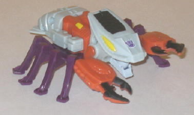
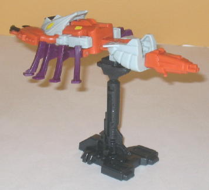
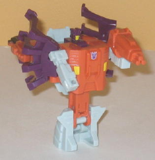
Difficulty of Transformation
: Very
Easy
Color Scheme
: Pale off-white, dark
violet, dull orange, and some yellow and black
Rating
: 6.0
Nautilator's alternate
mode is a robotic lobster-like monster. Thing. Anyways, he's one of the
lightest-colored Seacons, with an off-white and orange being the main colors.
The purple legs really help to add contrast against those two colors in
particular-- without it, Nautilator would have looked too bright overall,
methinks. The black on the lobster head and the top of the lobster claws
also work great for contrast purposes, as well. It's very odd that just
the top half of the lobster claws are painted black, however-- it looks
really weird. The actual proportions in beast mode are dynamite, though,
even if he can only move at the mouth and shoulders (and his claws tend
to come out of their pegs rather easily, sadly). The only other real downside
his beast mode has is that the his robot arms are REALLY obvious. I mean,
they're right THERE, on his back.
Nautilator's Targetmaster
mode has got to be one of the weirdest of any of the Seacons. It's basically
Nautilator's beast mode, turned around, with a tri-barreled rifle coming
out of his butt. Yay?
Nautilator's robot mode,
like most of the other Seacons', is fairly weak, though all-in-all it's
actually better than most of his brethren. He has the uni-leg problem like
all the other Seacon limb figures, though it doesn't look as bad or oddly-proportioned
as some of the others, and all his extras tuck neatly behind his back,
even if there are a lot of them (and his swept-back beast legs actually
complement the look of the mode rather than detract from it). His head
is really small, however, and it looks even smaller given how far back
it is from the front of the chest. It also becomes rather obvious in this
mode that Nautilator is rather lacking in the paint apps department, given
that there isn't quite as much color contrast-- only two small bits on
his chest and his faceplate are painted, which is a shame-- he really could've
used some paint on his legs or arms.
 Overbite
Overbite
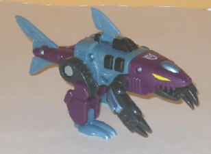
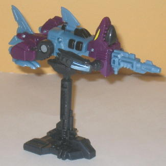
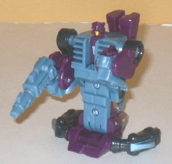
Difficulty of Transformation
: Very
Easy
Color Scheme
: Dull pearly moderately
light blue, dark violet, charcoal black, and some yellow and light metallic
silvery blue
Rating
: 5.7
Overbite's alternate
mode is a robotic shark. WITH LEGS AND ARMS. Yeah, that's right, you can't
outrun him even on land now! There's just as much "goofiness" as there
is "awesome" in that, so I can dig it. The proportions are pretty fiercesome,
as well, and for a G1 toy he's got quite a bit of detailing in there. I
especially like the little teeth and the HUGE claws on the end of his arms.
(The arms tend to come out of their pegs a little easily, however.) Overbite
has one of the best color schemes out of any of the individual Seacons,
with all of the colors coming together and fitting a Decepticon shark-monster
quite nicely, with no particularly bright colors (besides the optics and
robot mode faceplate). Like most of the other Seacons, Overbite's paint
detailing in beast mode is adequate, but no more-- he could definitely
use some paint on his rear legs and tail. He can move at the mouth, top
fin, shoulders, hips, knees, ankles, and at three points on his tail in
this mode-- which is very good for a G1 toy.
Overbite's Targetmaster
mode, like the other Seacons, really doesn't require much comment-- it's
a shark straightened out with a pistol at the end. Meh. (At least the pistol
can be held in his hands in robot mode, though.)
Like most of the other
Seacons, Overbite's robot mode was definitely low on the list of what's
important. His tail and fins just sorta hang behind his back unceremoniously,
and his shark head very obviously forms his feet. His shark feet are the
only thing that seemlessly makes the transition to arms. Heck, you wouldn't
even notice he has real legs if it wasn't for a thin line of mold detailing
in between the parts on his lower body to go, "Hey, look! Legs!" They barely
look like legs at all, and have overly large "feet". His head is also tiny,
though this is a result of the combining sequence. He can only move at
the shoulders and nd elbows in this mode, which severely limits the number
of poses you can put him in. He also has very little mold or paint detailing
in this mode, which leaves him looking pretty blah.
 Seawing
Seawing
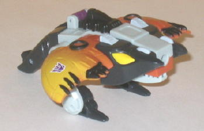
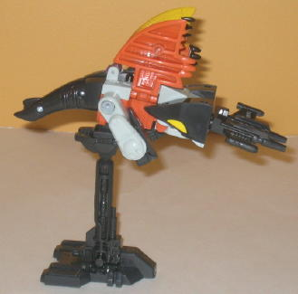
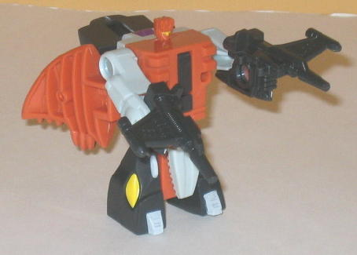
Difficulty of Transformation
: Very
Easy
Color Scheme
: Dull orange, pale
off-white, charcoal black, and some dark violet and yellow
Rating
: 5.2
Seawing's beast mode
is a robotic stingray. With legs. Normally I don't mind the extra appendages
on the other Seacons, but putting dorky little legs on a stingray looks
doofy, what with the wings and all. Still, that aside, this mode is good
for the most part, with the proportions being pretty good (though the wings
could stand to be a bit larger). The hole in the middle of his nose looks
REALLY dorky, however, and is really hard to get past. Seawing's color
scheme of black, dull orange, and off-white goes really well together,
and I really like the mold detailing on his wings. I also particularly
like the yellow "fade" pattern on the wings, that just looks rather beautiful,
there. He also has more paint apps than your average Seacon in this mode,
with many of his wing details, and some of his main body details, all being
painted (usually black). Seawing's articulation in this mode is pretty
limited-- he can move at the hips, ankles, and mouth, but that's it.
Seawing's Targetmaster
mode isn't much to look at, but in all honestly it's the best out of all
the Seacons, mainly because the folded-up wings look kind cool and contribute
to the look of the gun mode a bit.
Seawing's robot mode
wouldn't be that bad-- if it wasn't for the legs. Now, mind you, Seawing
is the only one of the Seacon limbs who actually has SEPARATELY MOVING
legs-- each one can move individually, and he can also move the shoulders
and wrists-- but they're way too short, and look way too dorky. I mean,
his waist reaches almost to the ground, for crying out loud. From the waist
up, though, he isn't too bad. As with all the Seacon limbs, his head is
teeny-tiny, but his chest and arms are otherwise well-propotioned, and
his beast mode extras swing behind his back and out of the way (and the
wings actually complement the look of the mode, in my opinion). For all
the paint apps he has in beast mode, though, Seawing DESPERATELY needs
some paint apps in this mode-- his head visor is really the only thing
that's "exclusive" to his robot mode that's painted. Oh, and his double-barreled
gun can split into two to be held in his fists, which is always cool.
 Skalor
Skalor
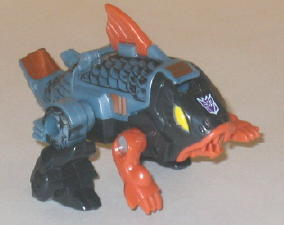
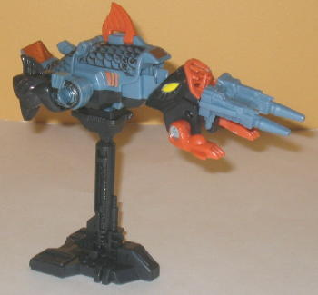

Difficulty of Transformation
: Very
Easy
Color Scheme
: Dull pearly moderately
light blue, charcoal black, dull orange, and some yellow and metallic bronzish
orange
Rating
: 5.4
Skalor's beast mode is
a robotic fish with legs and arms-- a coelacanth (sp?). The construction
of Skalor is nearly identical to that of Overbite, just with bulkier proportions.
He can move at the shoulders, mouth, top fin, hips, and knees, though,
so his articulation is a bit more limited. The orange really works quite
nicely with the dull blue and black, in the moderate amounts it's used,
and adds some really nice contrast to the figure. Unlike most of the other
Seacons, Skalor actually has a pretty decent number of paint apps in this
mode, primarily because of the black paint wasy done on his hips, main
body, and tail, which really brings out all that scaly detailing and helps
drive home the "dirty" part of his personality. I especially like the couple
of "bronzish orange" paint apps, they look REALLY nice.
Given the similar construction,
Skalor's Targetmaster mode also looks a lot like Overbite's, just, again,
with bulkier proportions. Oooh, and twin pistols instead of just one, that's
always cool.
Unfortunately, Skalor
also shares a virtually identical transformation with Overbite, which leaves
his robot mode looking like an afterthought. All of his fish extras are,
again, behind his back and legs and look blatantly obvious. He also has
practically no robot mode paint detailing except for on his undersized
head, and not a whole lot of mold detailing, either. At least his legs
look a little better proportionally, though they still suffer from the
"mono-leg" syndrome that all the other limb Seacons have. He can only move
at the elbows and shoulders, just like Overbite, though Skalor's arms are
definitely over-sized. Makes him look like a beefy guy, though I don't
know if that was intentional or not. His double-barreled gun splits in
two so that each fist can hold its own gun, which is pretty cool.
 Snaptrap
Snaptrap
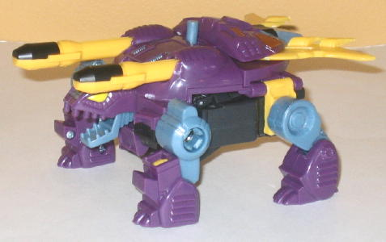
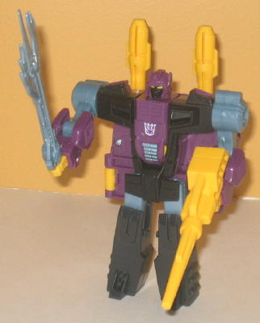
Difficulty of Transformation
: Easy
Color Scheme
: Dark violet, charcoal
black, yellow, and some dull pearly moderately light blue, metallic bronzish
orange, and light metallic silvery blue
Rating
: 6.9
Snaptrap is the only
one of the Seacons that I wouldn't technically classify as a "monster",
as he's got all of the necessarily features of a turtle but without any
extra limbs or anything. Granted, he has two POM-POM CANNONS OF DOOM on
his back, but hey, he's a walking tank of destruction. Ya gotta expect
stuff like that. Anyways, said cannons of doom have a pretty cool reciprocating
gimmick, where you move the tab in the middle of Snaptrap's back to push
one out, then the other. Pretty cool, given how old of a mold this is.
In turtle mode, Snaptrap's proportions are pretty spot-on, with a bit "beefier"
of a midsection, probably to emphasize his power. I also LOVE his his turtle
head is molded. I mean, you just can't a turtle to look any fiercer than
that, folks. The mold detailing, particularly on his shell, is also pretty
good, though the yellow fin-like things sticking out of the back, which
are used as part of the combined mode's chest plate, don't really look
like much in either of Snaptrap's individual modes. His overall color scheme
of purple and black with a bit of yellow and dull light blue looks quite
good-- even the yellow looks good in its current amount, though if there
was a lot more of it than this I would have called it gaudy. Snaptrap also
has quite a bit of paint detailing, though I would have sacrificed some
of all those paint apps on the rear end of his shell and moved some of
them to his turtle legs, as those are completely paint-free, sadly. The
pom-pom cannons also only have the top halves painted black, which looks
really weird. Snaptrap can move at the hips and knees of each of his four
legs and at his mouth in this mode.
Snaptrap's robot mode
is definitely the weaker of the two modes, though it's still not that bad.
My main problem with him is his legs-- they're too short proportionally,
and can only move side-to-side at the hips and knees, with no front-to-back
movement whatsoever. (His arms can move front-to-back at the shoulders
and elbows, though.) With the exception of a lack of paint detailing on
his robot parts-- only his face is painted-- this mode is otherwise looking
pretty good. Nice, broad shoulders without overdoing it, fairly beefy arms,
nicely-scuplted head and chest, plus he's got a big honkin' sword and gun
as weapons (though you can't store them in beast mode, sadly. Grrr). His
rear turtle legs hang blatantly off his back, however, and given how wide
his body is in turtle mode, there's some large purple flaps of plastic
behind his main body in this mode that don't mesh with the overall shape
of his body. You also have to remove the rear half of his shell to transform
him, which I hate. His pom-pom cannons still work, though, and I do like
his his color scheme shows off more eeevil black in this mode when compared
to his turtle mode.
 Tentakil
Tentakil
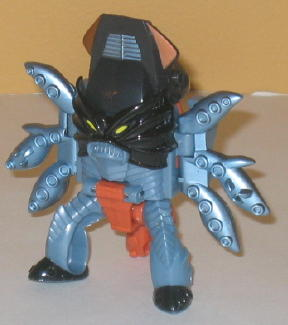
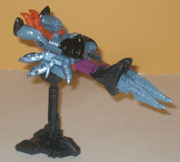
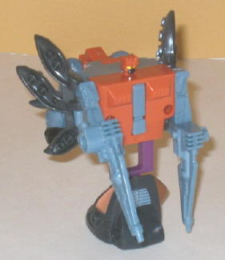
Difficulty of Transformation
: Very
Easy
Color Scheme
: Dull pearly moderately
light blue, dull orange, charcoal black, light metallic silvery blue, and
some yellow, glossy black, metallic bronzish orange, dark violet
Rating
: 6.3
Tentakil is probably
the most monster-ish of all the Seacons, only vaguely resembling a squid-thing.
He's mostly a humanoid sea monster with tentacles, really. (And honestly,
any other things aside, it sort of defeats the purpose of a transformation,
when your alt mode is already so humanoid.) Still, overall this is one
of the most solid beast modes of any of the Seacons. The onyl real robot
extras are the hands, which can be seen from the backside. Otherwise the
effect that they were going for seems to have been achieved-- you've got
a big-headed squid-human with tentacles. The mold detailing is also the
best out of any of the Seacons, with the face, chest and legs being intricately
detailed, particularly for a G1 toy. The black "mask" paint on the face
also works wonderfully well, and the metalllic blue tentacles look really
nice. I also like the touch of metallic bronzish orange on the sides of
the forehead. Tentakil can move back-and-forth at his tentacles (with all
three of the tentacles on each side being one piece), and back-and-forth
at the hips.
Tentakil's Targetmaster
mode, like the other Seacons, looks like a jumbled mess of his beast parts
with a twin-barreled gun on the front. Pretty weak-- can't really say anything
more than that.
Tentakil's robot mode
is definitely the best out of all of the limb Seacons. The proportions
are actually pretty good, though the chest is pretty wide and, as a side
effect of the combining gimmick, his head is pretty tiny. His beast legs
tuck behind his back pretty nicely, and his tentacles sweep back to not
only partially "hide" the backpack, but also add to the look of the mode
rather than subtract from it. Tentakil also has the same uni-leg problem
as the other Seacon limbs, but his legs are still fairly well-proportioned
and don't look overly odd. It becomes clear in robot mode that Tentakil's
color scheme is more of a side effect of the other molds-- he has a bit
of every color, really. Most of then go together pretty well, though using
the violet for JUST the upper legs is a bit of an odd placement considering
he doesn't have purple anywhere else on him, though. He also could really,
really use some paint detailing on his arms or under-detailed chest. Tentakil's
double-barreled gun can split into two so he can hold one gun in each hand,
which is pretty cool.
 Piranacon
(Combined Form)
Piranacon
(Combined Form)
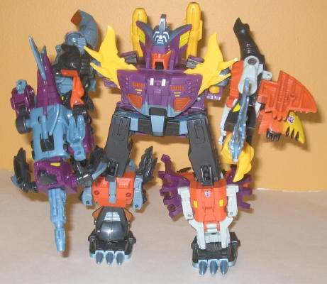
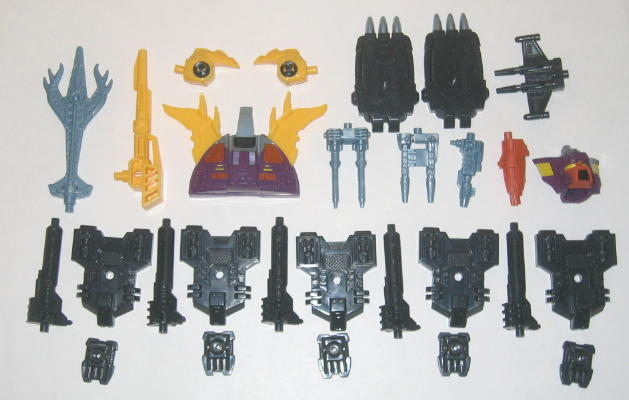
Difficulty of Transformation
: Hard
Color Scheme:
Dull pearly moderately
light blue, dark violet, dull orange, charcoal black, pale off-white, and
some yellow, metallic bronzish orange, glossy black, and light metallic
silvery blue
Rating
: 5.9
The Seacons combine (with the help of oodles of extra little parts) to form Piranacon. Piranacon is a pretty typical G1 gestalt, in that he's very playable and his proportions are decent, but he suffers from a severe lack of articulation-- he can move up-and-down at the shoulders, but that's it as far as movement goes. Like all the other G1 combiners, the larger core component-- in this case Snaptrap-- is stuck being the body, but all the other Seacons can be used in any way you wish-- in arms, legs, or as a Targetmaster gun (and since there's six Seacons, this means one of them is pretty much guaranteed to be the Targetmaster, as they can't all form the appendages). Piranacon, color-wise, looks very cool when combined-- all those colors look really well when combined together, and since they all share a similar "theme", it doesn't look so much like Piranacon is made of six seperate robots. I don't like the yellow fists, though, those just look weird. On the other hand, I REALLY like the paint job used on the head and chestpieces-- they really look nice and help add to the color scheme. Piranacon can use Snaptrap's trident and gun, or can substitute one for one of the Seacons in Targetmaster mode. With all this versatility comes a price, though-- like with nearly every G1 gestalt, you have to use some extra parts to form Piranacon, including a seperate head piece, the hands, the feet, and the chest piece. WHat's cool is that they all can be stored in a square corner of the nifty Collectors' box that they come in, though. Piranacon's biggest downside-- and it is a BIG downside-- is that all of his appendages have all this beast mode junk hanging off of them. Granted, or most of the other G1 combiners you had SOME parts hanging off the appendages, but rarely something as bad as this. It can really interfere with even the limited movement that Piranacon has.
The Seacon repaint set
is targeted towards a very specific type of collector (of course, if you're
going to aim it at a specific type, best to make a Club Exclusive like
this)-- one who A. Doesn't mind the limited articulation of G1 toys; B.
Loves the traditional "Scramble City"-style combiners; C. Doesn't mind
paying a mint for an exclusive toy; and D. Likes monster-ish alt modes.
If you fit into all these categories, then despite my low ratings of the
toys (which are more in comparison to today's toys than anything else),
I'd definitely recommend this set. Otherwise, your money is better spent
elsewhere.
Reviews by Beastbot